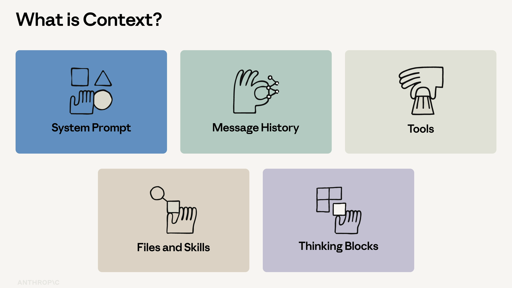
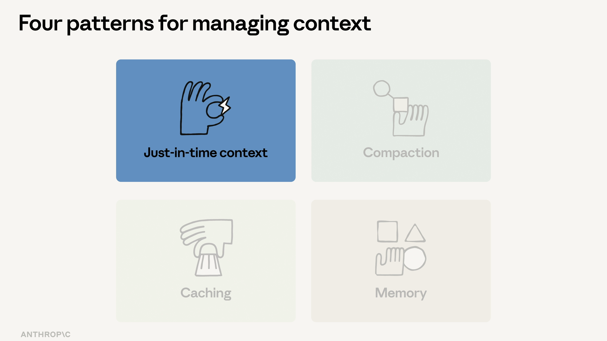
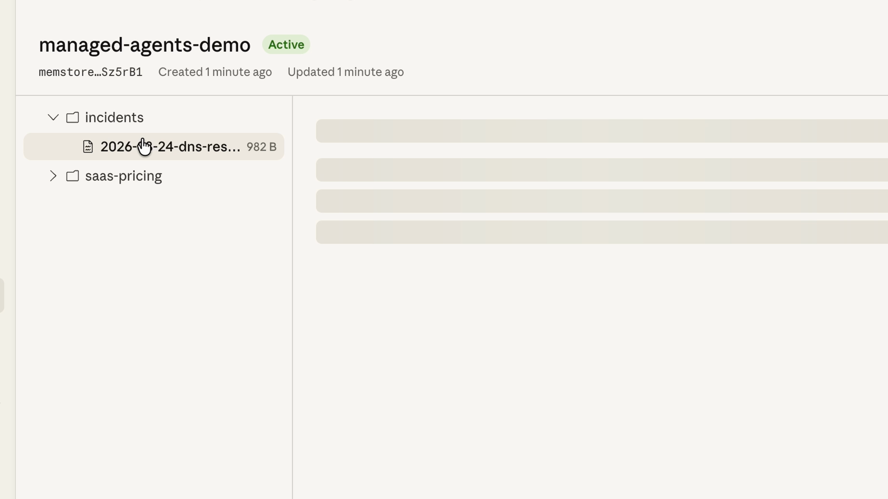

Управление контекстом
Чему научитесь
Видео 2:46 и текст урока
К концу урока вы сможете:
- перечислить, из чего складывается контекст, и объяснить, почему его приходится расходовать с умом;
- различать четыре паттерна управления контекстом: контекст по требованию, сжатие на стороне сервера, prompt caching и инструмент memory;
- подбирать паттерн под проблему: стоимость, размер окна или память между сессиями.
Видео и текст урока.
У каждого запроса к Claude есть окно контекста. Миллион токенов звучит внушительно, но, как только вы запускаете в работу настоящего агента, они заканчиваются быстрее, чем вы думаете. Здесь и нужно управление контекстом: это способ оставаться в пределах окна, не теряя того, что важно.
Что входит в контекст
Контекст — это всё, что Claude видит на текущем ходе:
- системный промпт;
- история сообщений;
- определения инструментов и результаты их вызовов;
- прикреплённые файлы и skills;
- блоки thinking.

Контекст подаётся на вход каждому без исключения вызову API. Вы платите за него на входе — и платите на выходе. А когда окно заполнено, запрос завершается ошибкой.
Поэтому цель — не уместить в окно всё. Цель — уместить то, что нужно.
Anthropic описывает четыре паттерна управления контекстом в агентах, которые работают долго. Три из них — полноценные функции API, а один — паттерн проектирования.

Паттерн 1: контекст по требованию
Не загружайте всё заранее. Загружайте то, что агенту нужно сейчас, а остальное пусть он подтягивает через инструменты, когда попросит.
Возьмём агента, который проверяет соответствие нормам. Ему не запихивают в системный промпт весь свод строительных норм — когда нужен конкретный раздел, он вызывает инструмент lookup_building_code. Из четырёх паттернов только этот — паттерн проектирования: никаких особых функций API, только осознанный выбор того, что загружать и когда.
Паттерн 2: сжатие на стороне сервера
Когда разговор затягивается, сжатие на стороне сервера (server-side compaction) от Anthropic сводит старые ходы в один блок с кратким содержанием. Чтобы включить его, добавьте в запрос ключ context_management с правкой (edit) нужного типа:
response = client.beta.messages.create(
betas=["compact-2026-01-12"],
model="claude-opus-5",
max_tokens=1024,
context_management={
"edits": [
{"type": "compact_20260112"}
]
},
messages=messages,
)
API само делает сводку, когда вход превышает пороговое значение (trigger). Следить за длиной разговора самим не нужно.
Паттерн 3: prompt caching
Prompt caching позволяет пометить неизменные части запроса — системный промпт, определения инструментов, длинный документ — и переиспользовать их от вызова к вызову за малую долю обычной цены.
Арифметика здесь важнее, чем кажется. Если системный промпт занимает 4000 токенов и вы отправляете его 100 раз в час, от кеша зависит, получите вы приемлемый счёт или звонок из финансового отдела.
Паттерн 4: инструмент memory
Часть контекста должна сохраняться между сессиями: предпочтения пользователя, рабочие заметки агента, решения, принятые на прошлой неделе. Рекомендуемое средство для этого — инструмент memory.
Вот как он устроен:
- Claude читает папку памяти и пишет в неё через вызовы инструмента;
- хранилище вы реализуете сами, на стороне клиента: файловая система, база данных, зашифрованное хранилище — что угодно;
- Anthropic автоматически добавляет системную инструкцию, которая велит Claude заглянуть в папку памяти, прежде чем браться за работу.

incidents лежит заметка об инциденте, сохранённая в прошлой сессии.Как сочетать паттерны
В рабочем приложении обычно используют все четыре сразу, один поверх другого. Агент проверки на соответствие нормам кеширует системный промпт и определения инструментов, а разделы строительных норм подтягивает по требованию через lookup_building_code.
Каждый паттерн закрывает свою проблему: стоимость, размер окна, отсутствие состояния между сессиями. Выбирайте паттерны под то, что ломается именно у вас.
Итог
- Контекст — это всё, что Claude видит на текущем ходе, и он не бесплатный и не бесконечный. Когда окно заполнится, запрос завершится ошибкой.
- Контекст по требованию: загружайте то, что нужно сейчас, а остальное пусть подтягивают инструменты. Из четырёх паттернов только этот — паттерн проектирования.
- Сжатие на стороне сервера: добавьте ключ
context_management, и API само сведёт старые ходы в сводку, когда вход превысит порог. - Prompt caching: пометьте неизменные части запроса и переиспользуйте их от вызова к вызову за малую долю цены.
- Инструмент memory: Claude читает папку памяти и пишет в неё через вызовы инструмента; хранилище ваше, поэтому контекст переживает сессии.
- Четыре паттерна — одна цель. Подключите их вручную или возьмите Claude Managed Agents: там кеширование и сжатие включены по умолчанию.
Дальше
Следующий урок — «Что такое Managed Agents»: набор API, который переносит цикл агента на инфраструктуру Anthropic, так что запускать его самим уже не нужно.
Оригинал урока: Context management.